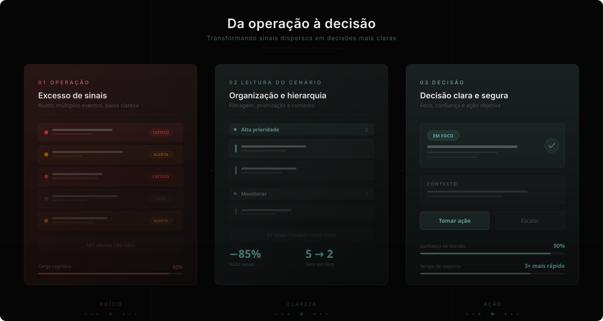
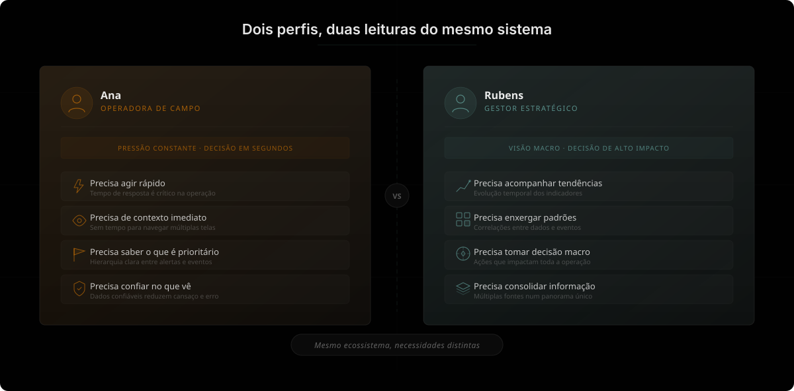
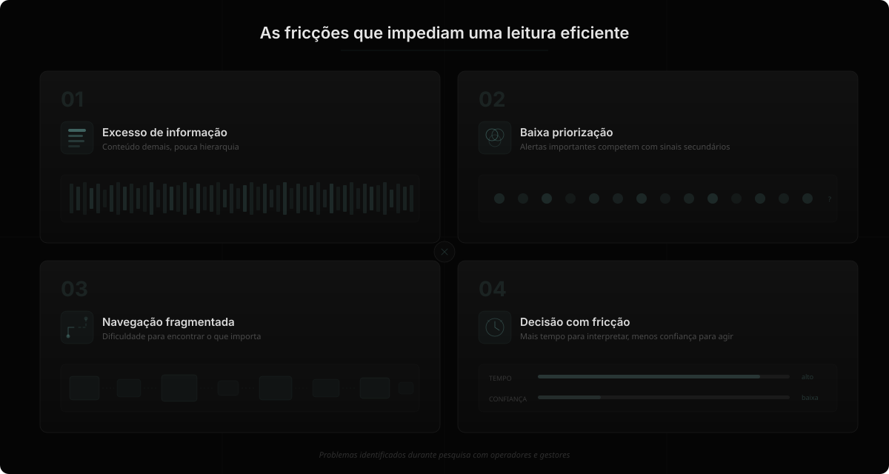
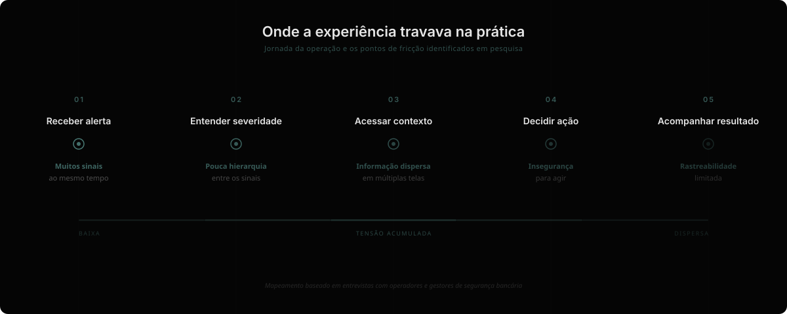
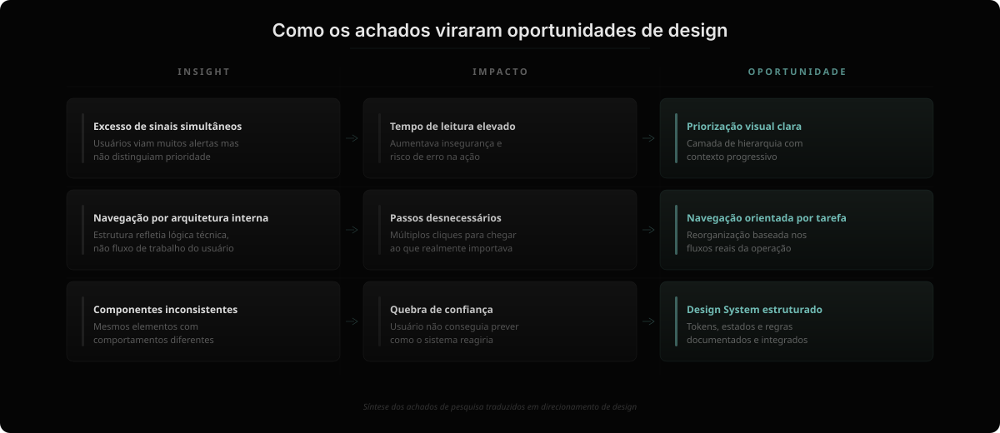
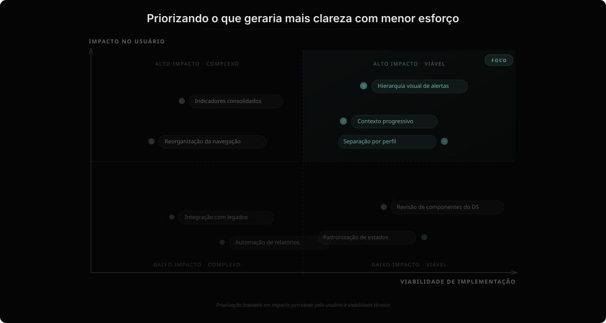
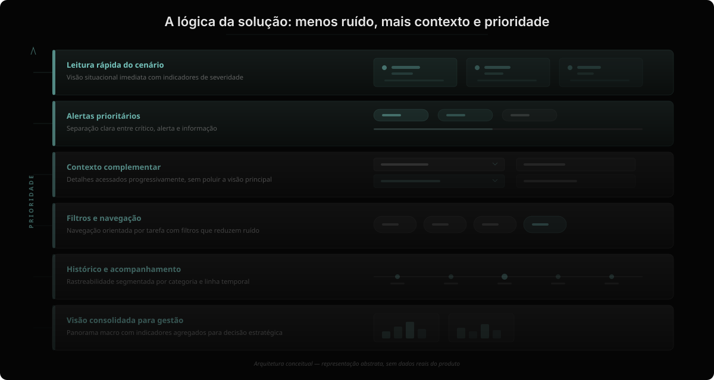
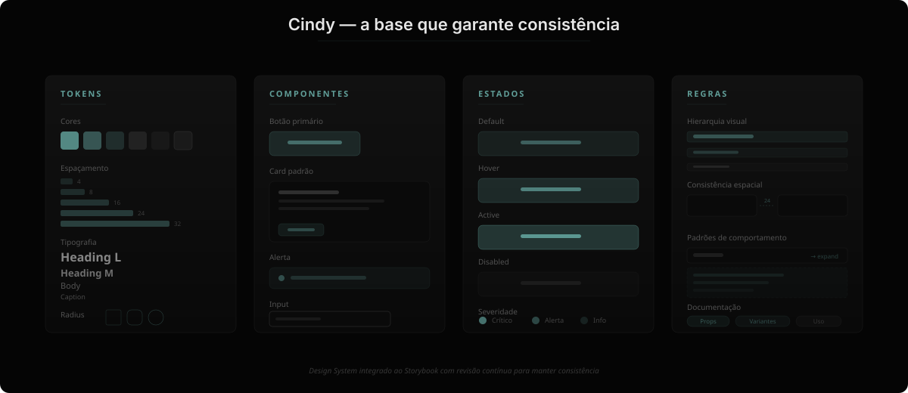
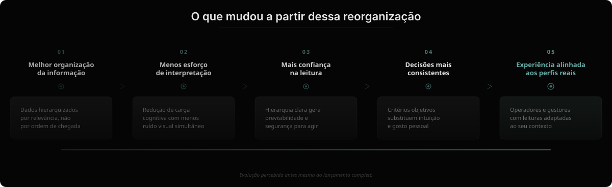

Este Case de UX é protegido por senha devido à privacidade dos dados.
Para visualizá-lo, insira a senha abaixo:
Senha incorreta. Tente novamente.
Você pode encontrar a senha no meu CV.
Caso contrário, envie um e-mail para priscilasimartins@gmail.com
Case Study
Redesign estratégico de uma plataforma crítica interna de Segurança Bancária.

Visão geral
Quando eu entrei nesse projeto, o sistema já funcionava em dois dos maiores bancos do Brasil. Ele funcionava tecnicamente, mas custava energia demais das pessoas que dependiam dele todos os dias. A operação acontecia. Os alertas apareciam. Os dados estavam lá.
Contudo, navegar por tudo aquilo exigia esforço constante, principalmente em momentos de pressão. Imagina a pressão em um monitoramento de um banco! Eu notei que era uma ótima oportunidade de experienciar isto em minha carreira. Afinal, era um produto que não tinha sido pensado a partir da experiência real de quem usava.
E é aí que eu entrei como líder no setor de UX/UI Designer.
Descoberta
Logo nas primeiras conversas com os usuários, uma coisa ficou clara: o sistema tinha sido organizado pela lógica da engenharia. Mas as pessoas operam pela lógica da urgência.
Quem estava na linha de frente precisava identificar rapidamente o que exigia ação. Quem estava na gestão precisava entender o cenário macro e tomar decisões estratégicas. E os dois estavam olhando para a mesma estrutura.
Essa tensão moldou todo o projeto. Ao invés de apenas "modernizar a interface", tentei reorganizar a forma como a informação se apresentava para apoiar decisões reais.

Pesquisa
Antes de qualquer proposta visual, eu mergulhei no contexto. Conduzi entrevistas e conversas estruturadas com usuários em diferentes níveis da operação. Observei como navegavam. Onde hesitavam. Onde ignoravam partes da tela. Onde confiavam — e onde desconfiavam.
Duas figuras começaram a se repetir: Rubens, um Gestor Estratégico que precisava de visão macro, análise de indicadores e agilidade para decisões de alto impacto. E Ana, Operadora de Campo sob pressão constante para agir rápido, que precisava de respostas rápidas, dados confiáveis e interface que reduzisse o cansaço visual.
Essas personas foram construídas com empathy maps, detalhando hábitos, necessidades, obstáculos, sentimentos e perfis tecnológicos. Por meio delas, conseguimos observar:
• O excesso de informação gerava paralisia.
• A falta de hierarquia visual aumentava o esforço cognitivo.
• A navegação não refletia as tarefas mais críticas.
• Alertas competiam entre si, sem priorização clara.

Análise
As conversas trouxeram relatos muito concretos: dificuldade para priorizar alertas, excesso de informação simultânea, insegurança ao interpretar certos estados do sistema, navegação pouco intuitiva em momentos de pressão.
Para transformar isso em direcionamento prático, comecei estruturando empathy maps. Eles me ajudaram a visualizar padrões emocionais e comportamentais que se repetiam entre perfis diferentes. Sobrecarga cognitiva e receio de ignorar algo crítico apareciam com frequência.
Com esses padrões identificados, organizei os insights em grandes frentes: segurança e confiança, organização da informação, navegação, relatórios, hierarquia visual e gestão de alarmes. Essa categorização trouxe clareza sobre onde estavam as fricções mais relevantes e facilitou a priorização.

Estratégia
Usei o Value Proposition Canvas como ferramenta de alinhamento entre o que os usuários realmente precisavam e o que o sistema já tinha capacidade técnica de oferecer. Muitos benefícios potenciais estavam pouco evidentes por causa da forma como a informação era apresentada.
Ao mesmo tempo, algumas dores recorrentes estavam relacionadas à organização e priorização dos dados, e não à ausência de funcionalidades. Esse mapeamento ajudou a direcionar o esforço para melhorar leitura, contexto e fluxo, em vez de ampliar escopo desnecessariamente.
Benchmark
Também analisei plataformas nacionais e internacionais que operam em contextos críticos. Busquei referências em dashboards industriais e sistemas de alta responsabilidade, observando principalmente como lidavam com hierarquia visual, diferenciação de severidade e organização espacial da informação.
Notei uma ênfase forte em clareza de prioridade e redução de ruído visual. Mapas interativos e indicadores bem definidos eram recorrentes. Essas análises serviram como parâmetro para calibrar decisões e reforçar critérios internos.

Priorização
Com diversos pontos mapeados, organizei as oportunidades em uma matriz de impacto versus viabilidade técnica. Essa etapa foi essencial para alinhar expectativas com produto e engenharia.
Algumas propostas exigiam mudanças estruturais complexas. Outras tinham potencial de melhorar significativamente a experiência com menor esforço técnico. Optamos por implementar melhorias que gerassem valor perceptível no curto prazo, enquanto estruturávamos base para evoluções mais profundas.

Ideação
As sessões de ideação envolveram stakeholders de produto, tecnologia e operação. Como os problemas já estavam bem definidos, as discussões foram mais objetivas e direcionadas. Entre as soluções priorizadas estavam:
• Alternância automática de categorias críticas para ampliar visão situacional.
• Filtros personalizados que reduzem ruído informacional.
• Indicadores visuais de status diretamente nas plantas.
• Histórico segmentado por categoria para facilitar análise contextual.
Cada proposta foi discutida considerando impacto operacional, clareza de uso e viabilidade técnica. Organizei as definições em uma documentação estruturada com descrição de função, regras de comportamento, estados e observações técnicas. Isso reduziu ambiguidade e facilitou a implementação pelo time de desenvolvimento.

"A experiência deixou de ser pensada apenas como interface e passou a ser discutida como ferramenta de decisão."
Decisões
Um sistema crítico, especialmente dentro de uma grande instituição financeira, não permite "simplificações românticas". Nada podia ser removido sem critério. Nada podia comprometer robustez. Nada podia quebrar fluxos já consolidados.
Eu conduzi sessões de ideação com produto e tecnologia, mas não como brainstorm aberto. Eu levei problemas claros para a mesa. Isso mudou completamente a qualidade das discussões. Algumas decisões importantes:
• Navegação orientada por tarefa, não por arquitetura interna.
• Diferenciação clara de níveis de severidade.
• Visualizações mais contextuais, menos poluição simultânea.
• Filtros que realmente ajudam — não apenas existem.
• Histórico segmentado para reduzir ruído.
Cada escolha tinha trade-off. E eu fiz questão de tornar esses trade-offs explícitos nas discussões com stakeholders.
Design System
Em determinado momento, ficou claro que redesenhar telas não resolveria o problema estrutural. Havia inconsistências acumuladas ao longo do tempo. Componentes semelhantes se comportavam de formas diferentes. Estados de alerta não tinham padronização clara.
Foi aí que eu criei o Design System "Cindy". Mais do que uma biblioteca visual, ele virou um instrumento de governança:
• Tokens bem definidos.
• 40+ componentes com estados documentados.
• Regras claras de hierarquia visual.
• Padrões de comportamento consistentes.
Eu trabalhei junto com front-end para integrar isso ao Storybook. E implementei uma dinâmica de revisão contínua para evitar que o sistema voltasse a se fragmentar. Essa parte do projeto não aparece em tela final. Mas é o que garante que o produto evolua com consistência.

Resultados
O projeto ainda está em desenvolvimento, mas já há mudanças perceptíveis:
• As conversas entre design e engenharia ficaram mais objetivas.
• As decisões têm mais clareza de critério.
• Novas telas estão sendo construídas com muito menos ambiguidade.
• A hierarquia visual passou a guiar a discussão de prioridade, e não por gosto pessoal.
E, talvez mais importante, a experiência deixou de ser pensada apenas como "interface" e passou a ser discutida como ferramenta de decisão.

"Eu não enxergo produto como soma de telas. Eu enxergo como sistema de decisões."
Reflexão
Nesse projeto, eu precisei: entender contexto organizacional complexo, traduzir problemas operacionais em direcionamento estratégico, conduzir alinhamento entre múltiplos stakeholders, defender clareza sem comprometer robustez e estruturar base para escala futura.
Esse tipo de trabalho é o que me interessa: ambientes complexos, impacto real, decisões que exigem maturidade.
Nota
Por se tratar de um sistema interno e sensível de um banco do Brasil, não compartilho telas ou fluxos. Mas gostaria de compartilhar como pensei, decidi, priorizei e lidei com tal complexidade. E é isso que este projeto representa para mim.
Próximo projeto